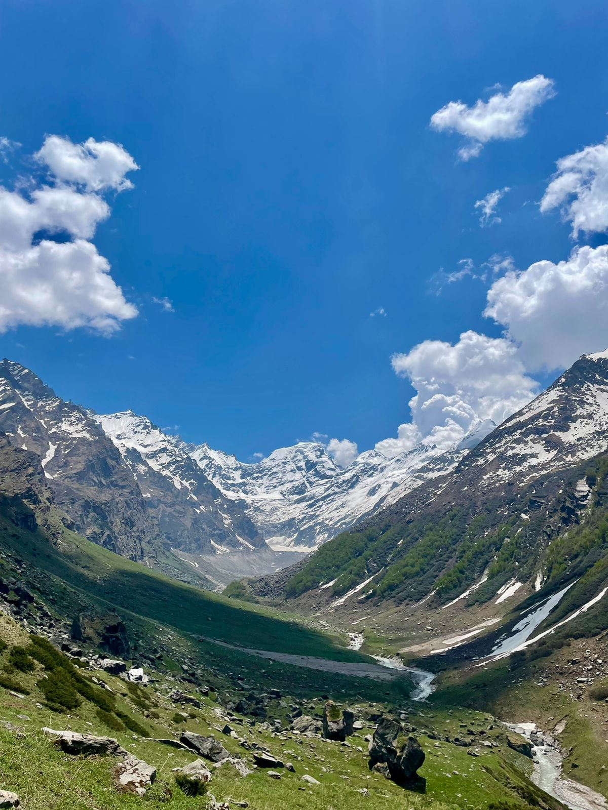

Chandratal, or 'Moon Lake', lies in Spiti district between a low ridge and the main Kunzum range, its deep blue water encircled by snow for much of the year. It is the source of the Chandra river, framed by the Mulkila and Chandrabhaga ranges, and local legend holds it as the spot from which Yudhishthira ascended to heaven in his mortal form.
Hadimba Devi temple, old Manali and the mall road.
Drive over Rohtang, gateway to Lahaul-Spiti, and on to camp at Dadarpul.
Drive to Kunzum Pass, then trek to the deep-blue crescent lake with panoramic CB-range views.
A leisure day by the lake.
The long drive back to Manali.
Free day, evening departure.